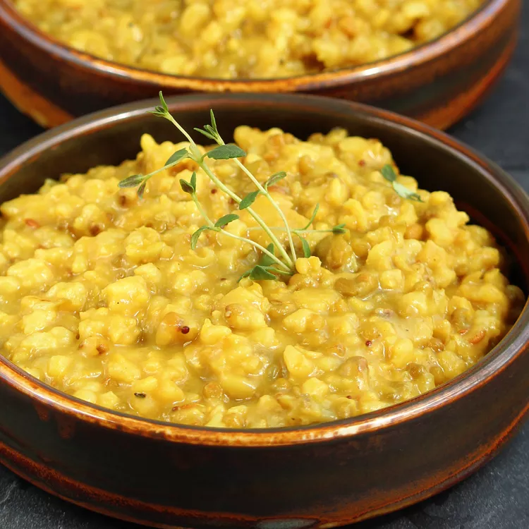

Dal Khichdi

This khichdi Instant Pot recipe is made with two types of legumes, brown basmati rice, and goda masala, for a traditionally flavored Indian dish. Goda masala is a coconut-based seasoning, which gives this dish a fragrant and tasty edge. Khichdi is easy to digest, so it is nice for detox or when you want something light.
Ingredients
- 1 cup brown basmati rice
- ½ cup whole green mung beans
- ¼ cup split yellow dal
- 8 tablespoons ghee, divided (Optional)
- 1 ½ teaspoons cumin seeds
- 1 ½ teaspoons brown mustard seeds
- 1 tablespoon minced fresh ginger root
- 1 tablespoon goda masala
- 1 teaspoon ground turmeric
- 1 teaspoon ground black pepper
- ½ teaspoon salt
- 6 cups water